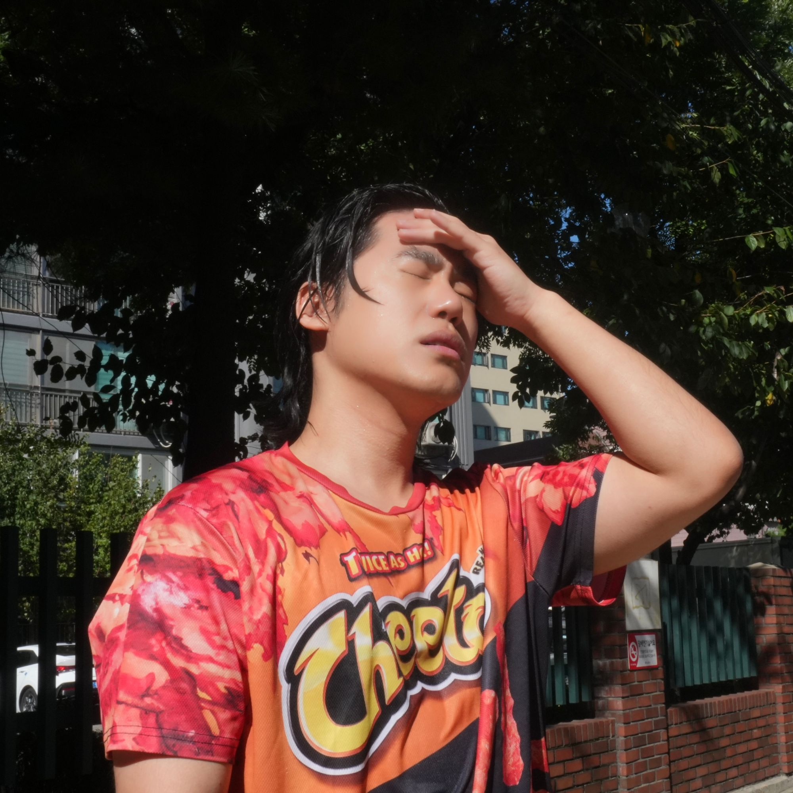

14.21
−13
•••
21°C
Air-conditioned, Seoul
Inside
14.21
21°
House Music Compilation · 6 Tracks
01
Headlock
— Lucy Gang
04
What You Like
— Logic1000
02
Rhythm Variation 06
— AOKI takamasa
05
LesAlpx
— Floating Points
03
More Than a Woman
— Kelly Lee Owens
06
Citta
— Cousin